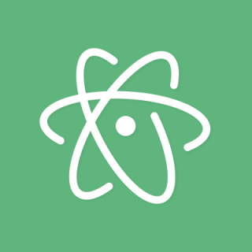

A bővítő csomagok többsége szabad szoftverlicencekkel rendelkezik, és közösségi fejlesztésű és karbantartású[idézés szükséges.
2022. június 8-án a GitHub bejelentette, hogy az Atom életciklusa az év december 15-én véget ér, "annak érdekében, hogy a szoftverfejlesztés jövőjét lehetővé tevő technológiákat részesítse előnyben", konkrétan a GitHub Codespaces és a Microsoft Visual Studio Code.

Az Atom egy "hackelhető" szövegszerkesztő, ami azt jelenti, hogy HTML, CSS és JavaScript segítségével testre szabható.
Az Atom egy webes technológiák felhasználásával készült asztali alkalmazás volt, alapja az Electron keretrendszer volt, amelyet erre a célra fejlesztettek ki, ezért korábban Atom Shellnek hívták Az Electron egy olyan keretrendszer, amely keresztplatformos asztali alkalmazásokat tesz lehetővé a Chromium és a Node.js felhasználásával.
Az Atom eredetileg CoffeeScript és Less nyelven íródott, de nagy részét JavaScriptre konvertálták.
Az Atom több programozási nyelv és fájlformátum esetében is képes szintaxis-kiemelést alkalmazni.
A legtöbb más konfigurálható szövegszerkesztőhöz hasonlóan az Atom is lehetővé tette a felhasználók számára, hogy harmadik féltől származó csomagokat és témákat telepítsenek a szerkesztő funkcióinak és kinézetének testreszabásához. A csomagokat az Atom apm csomagkezelőjén keresztül lehet telepíteni, kezelni és közzétenni. Minden típusú csomag, többek között, de nem kizárólagosan: Szintaktikai kiemelés támogatása az alapértelmezettől eltérő nyelvekhez, debuggerek stb. telepíthetők az apm-en keresztül.[idézés szükséges.
Az Atomot a GitHub fejlesztette ki szövegszerkesztőként, és az Atom Shell alapjául szolgált, amely az Electron Framework alapja lett.
A Facebook ezután fejlesztette a Nuclide és az Atom IDE projekteket, hogy az Atomot integrált fejlesztőkörnyezetté (IDE) alakítsa, de a Nuclide és az Atom IDE fejlesztése 2018 decemberében leállt.
2022. június 8-án a GitHub bejelentette az Atom fejlesztésének leállítását és az Atom összes fejlesztői adattárának archiválását 2022. december 15-ig.
Az Atom alapítója, Nathan Sobo bejelentette, hogy az Atom "szellemi utódját" készíti, melynek címe Zed.[nem elsődleges forrás szükséges] Az Atomtól eltérően a Zed Rust nyelven lesz írva és nem fogja használni az Electron keretrendszert.
2023. január 30-án a GitHub bejelentette, hogy betörtek a rendszerbe, ami feltárta "egy sor titkosított kódaláíró tanúsítványt", amelyek közül néhányat az Atom kiadásainak aláírására használtak. A GitHub azt tanácsolta a felhasználóknak, hogy az Atom korábbi, más kulccsal aláírt verziójára álljanak vissza.
Létrejött a projekt egy elágazása, Pulsar Editor néven.
Kezdetben az Atom bővítőcsomagjait és mindent, ami nem része az Atom magjának, nyílt forráskódú licenc alatt adták ki. 2014. május 6-án az Atom többi részét, beleértve a magalkalmazást, a csomagkezelőjét, valamint az asztali keretrendszerét, az Electron-t, szabad és nyílt forráskódú sof